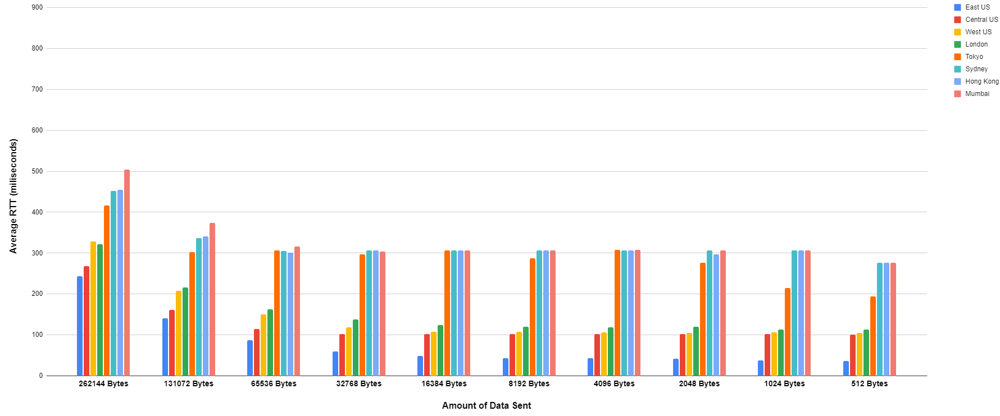

Welcome to the About Page! Here I will try (and maybe fail) to eloquently explain one of the experiments I performed, the data I got out of that experiment, and what that data represents.
I am currently working on another experiment that would fit well here, so I will add that in the coming weeks when it is completed.
In this experiment, I created multiple different Google Cloud Platform (GCP) servers around the globe, all running CentOS 8 as the operating system. From these GCP instances, they all ran the same basic TCP server program,
which would receive a wide variety of message sizes, starting at 2^18 bytes (roughly 262 kilobytes), and down to 2^9 bytes (512 bytes). The messages would be sent from the client (the Hololens),
to the server, and back to the client to calculate the total Round-Trip-Time. This process would be repeated 100 times for each message size, and the average was logged and charted into the graph.
In doing this experiment, it was found that the average RTT skyrockets exponentially as the client and server get further and further apart, rather than linearly as expected.
After continued testing, it was determined that this is due to TCP's Three-Way-Handshake,
which bloated the data significantly. The tests were then redone, this time factoring out the Three-Way-Handshake to gather more data. At this point in time, I am working on a UDP server and client that will gather
the same performance metrics, and the data will be compared to determine whether TCP or UDP will be a better choice moving forward.
Shown below is the data from the initial test, which included the RTT for the TCP Three-Way-Handshake. Evident in the data is the incredible spike between
262144 Bytes and 131072 Bytes for Tokyo, Sydney, Hong Kong, and Mumbai.
Shown below is the updated data once the Three-Way-Handshake was removed from the data pool. As seen in the data,
the removal of these few datapoints made the relationship in the data much more linear than before.
